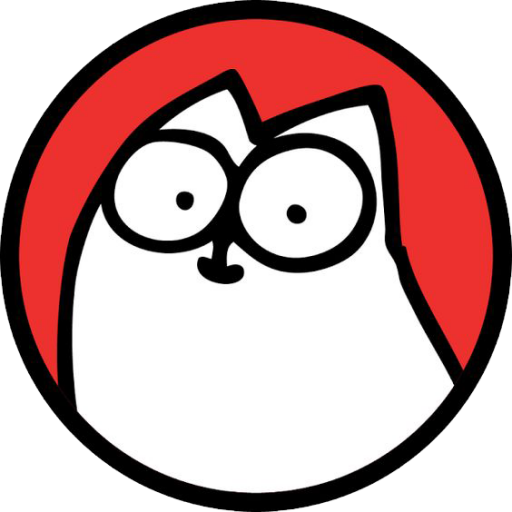

Simon’s Cat is a long-running animated series, created by an artist named Simon Tofield. The story features a man named Simon, and his quirky cat. The series has been running for 11 years and more, and is primarily centered around the white cat’s funny antics. The animated short called “Cat Man Do” was the first one to feature Simon’s cat.
The narrative of the show mainly revolves around dramatized situations all cat owners can relate to, making it a great comedy for all ages.
Simon Tofield had owned multiple cats throughout his life, who served as inspiration behind the cartoon. There are 89 episodes out currently, with many more to come.
Since 2008, the show has gained a steady following of 5 million subscribers on YouTube, and done very well on other social media.
Multiple books, such as "It's A Dog's Life" were released under the franchise. A mobile game called "Simon’s Cat Crunch Time - Puzzle Adventure!" also featured the michevious white cat and was generally favourable with over 200 000 users, with a 4.8/5 average.
Here’s the official "Simon’s Cat" website!
Return to the top of the page.